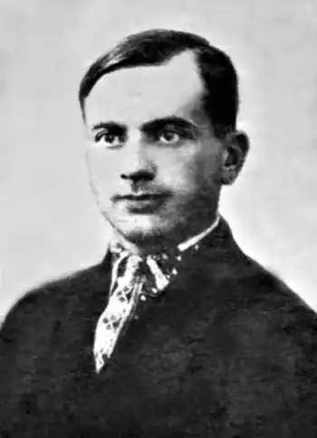

Народився у 1905 р. у м. Городище на Черкащині в родині службовця цукроварні. Закінчив сільську початкову школу, а з 1915-го, коли батька забрали на війну, дядько влаштував хлопця до Київської першої гімназії, де він навчався до 1920 р. З наступного року став учнем агротехнікуму при місцевому цукрозаводі, де зблизився з групою патріотичної молоді.
7.08.1922 р. його заарештували, а 18.01.1923 р. черкаський суд ув'язнив юнака на 5 років. Проте цей вирок через рік було скасовано і за постановою ЦК комсомолу України Василя узяли на випробувальний термін до заводської комсомольської організації. Там він пробув до літа 1925-го. Працював лаборантом на Городищенській цукроварні, у 1929 р. закінчив Київський сільськогосподарський інститут.
Ще другокурсником Труш-Коваль почав працювати як землевпорядник по установах Наркомзему України, пізніше потрапляє до геофізичного відділу Київського міськкомунгоспу. Але ця робота його не задовольняла, і коли він отримав запрошення з Владивостока, то виїхав туди. З 11.04.1933 р. він уже інженер-проектант у Благовєщенську Амурської області. Перші поетичні спроби датовані 1921 р., коли В. Труш-Коваль опублікував свої вірші в рукописному журналі "Рілля". У друкованому вигляді перший вірш "Дні" з'явився у "Глобусі" в 1926-му. Писав також п'єси. В. Труша-Коваля заарештували 28.02.1934 р. у Благовєщенську, звинувативши в тому, що він планував втечу за кордон. І справді поет кілька разів зустрічався з працівниками Маньчжурського консульства. 14.03.1935 р. його засудили на 10 років. 20.02.1936 р. він прибув до Воркутпечлагу і став працювати маркшейдером. Там із ним познайомився письменник Григорій Майфет, який і зберіг 24 вірші поета, переховуючи їх у чоботах під устілкою. Ці вірші, що писалися з 1921 по 1941 рік, були опубліковані щойно наприкінці 1980-х. Хоча В. Труш-Коваль і перебував, порівняно з рештою, у кращому становищі, але фізичне виснаження та застуда далися взнаки, після невдалої операції 11.01.1944 р. він помер.